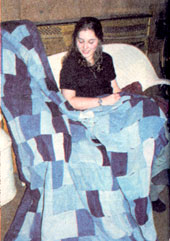

My great-grandmother used old clothing to make her quilts and following her example, I have a quilt made from castoff jeans that will last for many years. As resources, friends' closets and garage sales are a good place to find cheap - even free-used jeans.
I cut squares (the same width but different lengths) and pieced them together into strips as wide as I wanted my quilt to be. When sewing the strips of blocks together, I didn't match the seams because a lot of them bunched together would be too thick to sew through. After the top was pieced, I used an old flannel sheet on the inside as a batting and a lightweight upholstery fabric on the back. I put the three layers together and finished the quilt by tying it.
JENNY KENNEDY
Plattsburgh, New York
|
 |
|
|